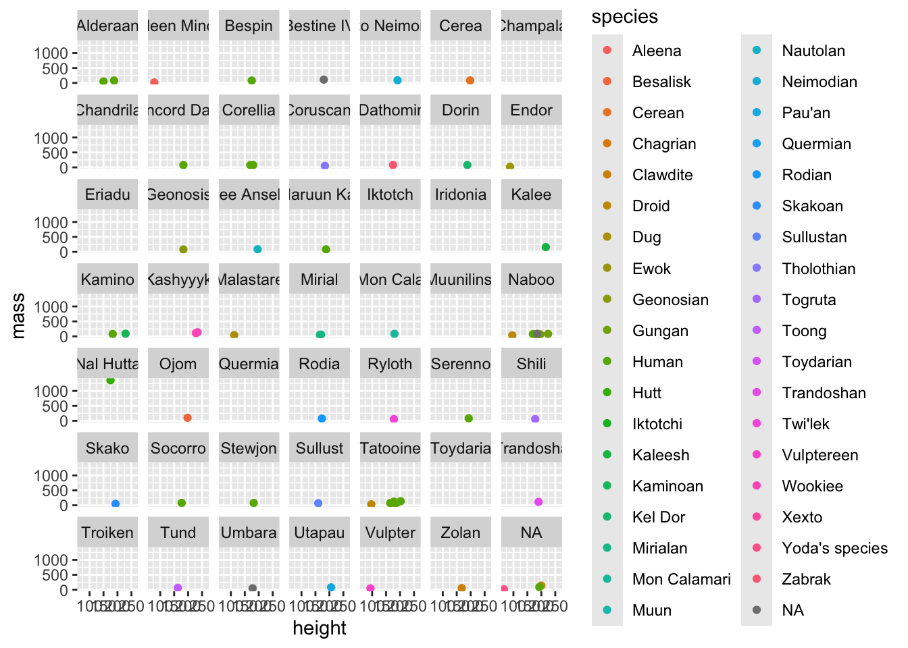

# A tibble: 4 × 2
team points
<chr> <dbl>
1 A 22
2 B 30
3 C 18
4 D 543 Data Cleaning and Manipulation
Reading: 18 minute(s) at 200 WPM.
Videos: 60 minutes
Objectives
- Apply data manipulation verbs (filter, select, group by, summarize, mutate) to prepare data for analysis
- Identify required sequence of steps for data cleaning
- Describe step-by-step data cleaning process in lay terms appropriately and understand the consequences of data cleaning steps
- Create summaries of data appropriate for analysis or display using data manipulation techniques
Check-ins
There is one check-in for this week:
3.1 A quick note about tibble
We have been talking about our data in terms of data.frame objects in R. This is meant to inform you there is another object type in R called tibbles. Essentially, Tibbles are data frames, but they have certain features that make them easier to work with and provide additional cool features that can be useful (e.g., see nest()).
You can use as_tibble() to convert data.frame objects in R to a tibble object.
Learn more about tibbles
You can read more about Tibbles in R for Data Science: Tibbles
3.2 Introduction to dplyr
In this section, we’re going start learning how to work with data. Generally speaking, data doesn’t come in a form suitable for data visualization or statistical analysis1 - you have to clean it up, create the variables you care about, get rid of those you don’t care about, and so on.
Some people call the process of cleaning and organizing your data “data wrangling”, which is a fantastic way to think about chasing down all of the issues in the data.

We will be using the tidyverse for this. It’s a meta-package (a package that just loads other packages) that collects packages designed with the same philosophy2 and interface (basically, the commands will use predictable argument names and structure). You’ve already been introduced to parts of the tidyverse - specifically, readr and ggplot2.
dplyr (one of the packages in the tidyverse) creates a “grammar of data manipulation” to make it easier to describe different operations. I find the dplyr grammar to be extremely useful when talking about data operations.
Each dplyr verb describes a common task when doing both exploratory data analysis and more formal statistical modeling. In all tidyverse functions, data comes first – literally, as it’s the first argument to any function. In addition, you don’t use df$variable to access a variable - you refer to the variable by its name alone (“bare” names). This makes the syntax much cleaner and easier to read, which is another principle of the tidy philosophy.
Main dplyr verbs
filter()arrange()select()mutate()summarize()- Use
group_by()to perform group wise operations - Use the pipe operator (
|>or%>%) to chain together data wrangling operations
There is an excellent dplyr cheatsheet available from RStudio. You may want to print it out to have a copy to reference as you work through this chapter.
Motivation & Example Dataset
Last week we learned all about creating graphics in ggplot2. I am hoping to use data visualization as motivation going forward in this class – how do we get our data look like what we need in order to create the graph we want?
Let’s explore how the dplyr verbs work, using the starwars data set, which contains a comprehensive list of the characters in the Star Wars movies and information about their height, mass, hair_color, skin_color, eye_color, birth_year, sex, gender, homeworld, species, films, vehicles, and starships.
This data set is included in the dplyr package, so we load that package and then use the data() function to load data set into memory. The loading isn’t complete until we actually use the data set though… so let’s look at our variables and types and print the first few rows.
| name | height | mass | hair_color | skin_color | eye_color | birth_year | sex | gender | homeworld | species |
|---|---|---|---|---|---|---|---|---|---|---|
| Luke Skywalker | 172 | 77 | blond | fair | blue | 19.0 | male | masculine | Tatooine | Human |
| C-3PO | 167 | 75 | NA | gold | yellow | 112.0 | none | masculine | Tatooine | Droid |
| R2-D2 | 96 | 32 | NA | white, blue | red | 33.0 | none | masculine | Naboo | Droid |
| Darth Vader | 202 | 136 | none | white | yellow | 41.9 | male | masculine | Tatooine | Human |
| Leia Organa | 150 | 49 | brown | light | brown | 19.0 | female | feminine | Alderaan | Human |
| Owen Lars | 178 | 120 | brown, grey | light | blue | 52.0 | male | masculine | Tatooine | Human |
| Beru Whitesun Lars | 165 | 75 | brown | light | blue | 47.0 | female | feminine | Tatooine | Human |
| R5-D4 | 97 | 32 | NA | white, red | red | NA | none | masculine | Tatooine | Droid |
| Biggs Darklighter | 183 | 84 | black | light | brown | 24.0 | male | masculine | Tatooine | Human |
| Obi-Wan Kenobi | 182 | 77 | auburn, white | fair | blue-gray | 57.0 | male | masculine | Stewjon | Human |
We could create a scatterplot of the character’s height by mass, color by species, and facet by homeworld.
library(ggplot2)
ggplot(data = starwars, aes(x = height,
y = mass,
color = species)
) +
geom_point() +
facet_wrap(~ homeworld)
There is way too much going on in these plots to see anything of importance. Let’s break it down into the parts we are interested in.
3.3 filter(): Pick cases (rows) based on their values
Filter allows us to work with a subset of a larger data frame, keeping only the rows we’re interested in. We provide one or more logical conditions, and only those rows which meet the logical conditions are returned from filter(). Note that unless we store the result from filter() in the original object, we don’t change the original.

Once the data is set up, filtering the data (selecting certain rows) is actually very simple. Of course, we’ve talked about how to use logical indexing before in Indexing Matrices, but here we’ll focus on using specific functions to perform the same operation.
The dplyr verb for selecting rows is filter(). filter() takes a set of one or more logical conditions, using bare column names and logical operators. Each provided condition is combined using AND.
Let’s say we were interested in only the people, we could create a new data set starwars_people and filter on the species variable.
# Get only the people
starwars_people <- filter(.data = starwars,
species == "Human"
)
starwars_people| name | height | mass | hair_color | skin_color | eye_color | birth_year | sex | gender | homeworld | species |
|---|---|---|---|---|---|---|---|---|---|---|
| Luke Skywalker | 172 | 77 | blond | fair | blue | 19.0 | male | masculine | Tatooine | Human |
| Darth Vader | 202 | 136 | none | white | yellow | 41.9 | male | masculine | Tatooine | Human |
| Leia Organa | 150 | 49 | brown | light | brown | 19.0 | female | feminine | Alderaan | Human |
| Owen Lars | 178 | 120 | brown, grey | light | blue | 52.0 | male | masculine | Tatooine | Human |
| Beru Whitesun Lars | 165 | 75 | brown | light | blue | 47.0 | female | feminine | Tatooine | Human |
We can create the same plot with our new subset of data (starwars_people).
Code
ggplot(data = starwars_people,
mapping = aes(x = height,
y = mass,
color = species
)
) +
geom_point() +
facet_wrap(~ homeworld)This looks better, but what if we only care about the people who come from Tatooine? Starting with our original starwars data set, we can combine logical AND statements with a comma to define a data subset called starwars_tatoonie_people.
# Get only the people who come from Tatooine
starwars_tatooine_people <- filter(.data = starwars,
species == "Human",
homeworld == "Tatooine"
)
starwars_tatooine_people| name | height | mass | hair_color | skin_color | eye_color | birth_year | sex | gender | homeworld | species |
|---|---|---|---|---|---|---|---|---|---|---|
| Luke Skywalker | 172 | 77 | blond | fair | blue | 19.0 | male | masculine | Tatooine | Human |
| Darth Vader | 202 | 136 | none | white | yellow | 41.9 | male | masculine | Tatooine | Human |
| Owen Lars | 178 | 120 | brown, grey | light | blue | 52.0 | male | masculine | Tatooine | Human |
| Beru Whitesun Lars | 165 | 75 | brown | light | blue | 47.0 | female | feminine | Tatooine | Human |
| Biggs Darklighter | 183 | 84 | black | light | brown | 24.0 | male | masculine | Tatooine | Human |
Code
ggplot(data = starwars_tatooine_people,
mapping = aes(x = height,
y = mass,
color = species
)
) +
geom_point() +
facet_wrap(~ homeworld)Useful comparison operations in R
We might not always want to only filter on a variable set equal to a certain category or value, the following operations can help you combine logical operations in filter().
-
>greater than -
<less than -
==equal to -
%in%identifies if an element belongs to a vector -
|or
3.3.1 Common Row Selection Tasks
In dplyr, there are a few helper functions which may be useful when constructing filter statements.
Filtering by row number
row_number() is a helper function that is only used inside of another dplyr function (e.g. filter). You might want to keep only even rows, or only the first 10 rows in a table.
Notice how we now have C-3PO, Darth Vader, Beru Whites, Anakin Skywalker, etc. (rows 2, 4, 6, …) from the original starwars data set output above.
filter(.data = starwars,
row_number() %% 2 == 0
) | name | height | mass | hair_color | skin_color | eye_color | birth_year | sex | gender | homeworld | species |
|---|---|---|---|---|---|---|---|---|---|---|
| C-3PO | 167 | 75 | NA | gold | yellow | 112.0 | none | masculine | Tatooine | Droid |
| Darth Vader | 202 | 136 | none | white | yellow | 41.9 | male | masculine | Tatooine | Human |
| Owen Lars | 178 | 120 | brown, grey | light | blue | 52.0 | male | masculine | Tatooine | Human |
| R5-D4 | 97 | 32 | NA | white, red | red | NA | none | masculine | Tatooine | Droid |
| Obi-Wan Kenobi | 182 | 77 | auburn, white | fair | blue-gray | 57.0 | male | masculine | Stewjon | Human |
| name | height | mass | hair_color | skin_color | eye_color | birth_year | sex | gender | homeworld | species |
|---|---|---|---|---|---|---|---|---|---|---|
| Luke Skywalker | 172 | 77 | blond | fair | blue | 19.0 | male | masculine | Tatooine | Human |
| C-3PO | 167 | 75 | NA | gold | yellow | 112.0 | none | masculine | Tatooine | Droid |
| R2-D2 | 96 | 32 | NA | white, blue | red | 33.0 | none | masculine | Naboo | Droid |
| Darth Vader | 202 | 136 | none | white | yellow | 41.9 | male | masculine | Tatooine | Human |
| Leia Organa | 150 | 49 | brown | light | brown | 19.0 | female | feminine | Alderaan | Human |
| Owen Lars | 178 | 120 | brown, grey | light | blue | 52.0 | male | masculine | Tatooine | Human |
| Beru Whitesun Lars | 165 | 75 | brown | light | blue | 47.0 | female | feminine | Tatooine | Human |
| R5-D4 | 97 | 32 | NA | white, red | red | NA | none | masculine | Tatooine | Droid |
| Biggs Darklighter | 183 | 84 | black | light | brown | 24.0 | male | masculine | Tatooine | Human |
| Obi-Wan Kenobi | 182 | 77 | auburn, white | fair | blue-gray | 57.0 | male | masculine | Stewjon | Human |
arrange() Sorting rows by variable values
Another common operation is to sort your data frame by the values of one or more variables.
arrange() is a dplyr verb for sorting rows in the table by one or more variables. It is often used with a helper function, desc(), which reverses the order of a variable, sorting it in descending order. Multiple arguments can be passed to arrange to sort the data frame by multiple columns hierarchically; each column can be modified with desc() separately.
The code below arranges the starwars characters tallest to shortest.
| name | height | mass | hair_color | skin_color | eye_color | birth_year | sex | gender | homeworld | species |
|---|---|---|---|---|---|---|---|---|---|---|
| Yarael Poof | 264 | NA | none | white | yellow | NA | male | masculine | Quermia | Quermian |
| Tarfful | 234 | 136 | brown | brown | blue | NA | male | masculine | Kashyyyk | Wookiee |
| Lama Su | 229 | 88 | none | grey | black | NA | male | masculine | Kamino | Kaminoan |
| Chewbacca | 228 | 112 | brown | unknown | blue | 200.0 | male | masculine | Kashyyyk | Wookiee |
| Roos Tarpals | 224 | 82 | none | grey | orange | NA | male | masculine | Naboo | Gungan |
| Grievous | 216 | 159 | none | brown, white | green, yellow | NA | male | masculine | Kalee | Kaleesh |
| Taun We | 213 | NA | none | grey | black | NA | female | feminine | Kamino | Kaminoan |
| Rugor Nass | 206 | NA | none | green | orange | NA | male | masculine | Naboo | Gungan |
| Tion Medon | 206 | 80 | none | grey | black | NA | male | masculine | Utapau | Pau'an |
| Darth Vader | 202 | 136 | none | white | yellow | 41.9 | male | masculine | Tatooine | Human |
Keep the top \(n\) values of a variable
slice_max() will keep the top values of a specified variable. This is like a filter statement, but it’s a shortcut built to handle a common task. You could write a filter statement that would do this, but it would take a few more lines of code.
The code below outputs the 5 tallest characters in star wars.
slice_max(.data = starwars,
order_by = height,
n = 5
)| name | height | mass | hair_color | skin_color | eye_color | birth_year | sex | gender | homeworld | species |
|---|---|---|---|---|---|---|---|---|---|---|
| Yarael Poof | 264 | NA | none | white | yellow | NA | male | masculine | Quermia | Quermian |
| Tarfful | 234 | 136 | brown | brown | blue | NA | male | masculine | Kashyyyk | Wookiee |
| Lama Su | 229 | 88 | none | grey | black | NA | male | masculine | Kamino | Kaminoan |
| Chewbacca | 228 | 112 | brown | unknown | blue | 200 | male | masculine | Kashyyyk | Wookiee |
| Roos Tarpals | 224 | 82 | none | grey | orange | NA | male | masculine | Naboo | Gungan |
Of course, there is a similar slice_min() function as well:
The code below outputs the 5 shortest characters in star wars.
slice_min(.data = starwars,
order_by = height,
n = 5
)| name | height | mass | hair_color | skin_color | eye_color | birth_year | sex | gender | homeworld | species |
|---|---|---|---|---|---|---|---|---|---|---|
| Yoda | 66 | 17 | white | green | brown | 896 | male | masculine | NA | Yoda's species |
| Ratts Tyerel | 79 | 15 | none | grey, blue | unknown | NA | male | masculine | Aleen Minor | Aleena |
| Wicket Systri Warrick | 88 | 20 | brown | brown | brown | 8 | male | masculine | Endor | Ewok |
| Dud Bolt | 94 | 45 | none | blue, grey | yellow | NA | male | masculine | Vulpter | Vulptereen |
| R2-D2 | 96 | 32 | NA | white, blue | red | 33 | none | masculine | Naboo | Droid |
| R4-P17 | 96 | NA | none | silver, red | red, blue | NA | none | feminine | NA | Droid |
By default, slice_max() and slice_min() return values tied with the nth value as well, which is why our result above has 6 rows.
Use with_ties = FALSE.
slice_min(.data = starwars,
order_by = height,
n = 5,
with_ties = FALSE
)| name | height | mass | hair_color | skin_color | eye_color | birth_year | sex | gender | homeworld | species |
|---|---|---|---|---|---|---|---|---|---|---|
| Yoda | 66 | 17 | white | green | brown | 896 | male | masculine | NA | Yoda's species |
| Ratts Tyerel | 79 | 15 | none | grey, blue | unknown | NA | male | masculine | Aleen Minor | Aleena |
| Wicket Systri Warrick | 88 | 20 | brown | brown | brown | 8 | male | masculine | Endor | Ewok |
| Dud Bolt | 94 | 45 | none | blue, grey | yellow | NA | male | masculine | Vulpter | Vulptereen |
| R2-D2 | 96 | 32 | NA | white, blue | red | 33 | none | masculine | Naboo | Droid |
slice_max and slice_min also take a prop argument that gives you a certain proportion of the values:
The code below outputs the shortest 1% of characters in star wars.
slice_max(.data = starwars,
order_by = height,
prop = 0.01
)| name | height | mass | hair_color | skin_color | eye_color | birth_year | sex | gender | homeworld | species |
|---|---|---|---|---|---|---|---|---|---|---|
3.4 select(): Pick columns
Sometimes, we don’t want to work with a set of 50 variables when we’re only interested in 5. When that happens, we might be able to pick the variables we want by index (e.g. df[, c(1, 3, 5)]), but this can get tedious.
In dplyr, the function to pick a few columns is select(). The syntax from the help file (?select) looks deceptively simple.
select(.data, …)
So as with just about every other tidyverse function, the first argument in a select statement is the data (.data =). After that, though, you can put just about anything that R can interpret. ... means something along the lines of “put in any additional arguments that make sense in context or might be passed on to other functions”.
So what can go in there?
An exhaustive(?) list of ways to select variables in dplyr
First, dplyr aims to work with standard R syntax, making it intuitive (and also, making it work with variable names instead of just variable indices).3
Most dplyr commands work with “bare” variable names - you don’t need to put the variable name in quotes to reference it. There are a few exceptions to this rule, but they’re very explicitly exceptions.
var3:var5:select(df, var3:var5)will give you a data frame with columns var3, anything between var3 and var 5, and var5-
!(<set of variables>)will give you any columns that aren’t in the set of variables in parentheses-
(<set of vars 1>) & (<set of vars 2>)will give you any variables that are in both set 1 and set 2.(<set of vars 1>) | (<set of vars 2>)will give you any variables that are in either set 1 or set 2. -
c()combines sets of variables.
-
dplyr also defines a lot of variable selection “helpers” that can be used inside select() statements. These statements work with bare column names (so you don’t have to put quotes around the column names when you use them).
-
everything()matches all variables -
last_col()matches the last variable.last_col(offset = n)selects the n-th to last variable. -
starts_with("xyz")will match any columns with names that start with xyz. Similarly,ends_with()does exactly what you’d expect as well. -
contains("xyz")will match any columns with names containing the literal string “xyz”. Note,containsdoes not work with regular expressions (you don’t need to know what that means right now). -
matches(regex)takes a regular expression as an argument and returns all columns matching that expression. -
num_range(prefix, range)selects any columns that start with prefix and have numbers matching the provided numerical range.
There are also selectors that deal with character vectors. These can be useful if you have a list of important variables and want to just keep those variables.
-
all_of(char)matches all variable names in the character vectorchar. If one of the variables doesn’t exist, this will return an error. -
any_of(char)matches the contents of the character vectorchar, but does not throw an error if the variable doesn’t exist in the data set.
There’s one final selector -
-
where()applies a function to each variable and selects those for which the function returns TRUE. This provides a lot of flexibility and opportunity to be creative.
Let’s try these selector functions out and see what we can accomplish!
Starting simple, let’s only subset and keep only the following variables from the starwars data set: name, height, mass, birth_year, species, and homeworld.
select(.data = starwars, name, height, mass, birth_year, species, homeworld)| name | height | mass | birth_year | species | homeworld |
|---|---|---|---|---|---|
| Luke Skywalker | 172 | 77 | 19.0 | Human | Tatooine |
| C-3PO | 167 | 75 | 112.0 | Droid | Tatooine |
| R2-D2 | 96 | 32 | 33.0 | Droid | Naboo |
| Darth Vader | 202 | 136 | 41.9 | Human | Tatooine |
| Leia Organa | 150 | 49 | 19.0 | Human | Alderaan |
| Owen Lars | 178 | 120 | 52.0 | Human | Tatooine |
| Beru Whitesun Lars | 165 | 75 | 47.0 | Human | Tatooine |
| R5-D4 | 97 | 32 | NA | Droid | Tatooine |
| Biggs Darklighter | 183 | 84 | 24.0 | Human | Tatooine |
| Obi-Wan Kenobi | 182 | 77 | 57.0 | Human | Stewjon |
Since name, height, and mass are next to each other, we could have specified name:mass to tell us to select all of the columns between and including name to mass.
select(.data = starwars, name:mass, birth_year, species, homeworld)| name | height | mass | birth_year | species | homeworld |
|---|---|---|---|---|---|
| Luke Skywalker | 172 | 77 | 19.0 | Human | Tatooine |
| C-3PO | 167 | 75 | 112.0 | Droid | Tatooine |
| R2-D2 | 96 | 32 | 33.0 | Droid | Naboo |
| Darth Vader | 202 | 136 | 41.9 | Human | Tatooine |
| Leia Organa | 150 | 49 | 19.0 | Human | Alderaan |
| Owen Lars | 178 | 120 | 52.0 | Human | Tatooine |
| Beru Whitesun Lars | 165 | 75 | 47.0 | Human | Tatooine |
| R5-D4 | 97 | 32 | NA | Droid | Tatooine |
| Biggs Darklighter | 183 | 84 | 24.0 | Human | Tatooine |
| Obi-Wan Kenobi | 182 | 77 | 57.0 | Human | Stewjon |
The select column is also useful for reordering the variables in your data set.
:::
Perhaps we want the birth_year, sex, gender, homeworld, and species to follow the name of the star wars character. We can use the everything() function to specify we want all the other variables to follow.
select(.data = starwars, name, birth_year:species, everything())| name | birth_year | sex | gender | homeworld | species | height | mass | hair_color | skin_color | eye_color |
|---|---|---|---|---|---|---|---|---|---|---|
| Luke Skywalker | 19.0 | male | masculine | Tatooine | Human | 172 | 77 | blond | fair | blue |
| C-3PO | 112.0 | none | masculine | Tatooine | Droid | 167 | 75 | NA | gold | yellow |
| R2-D2 | 33.0 | none | masculine | Naboo | Droid | 96 | 32 | NA | white, blue | red |
| Darth Vader | 41.9 | male | masculine | Tatooine | Human | 202 | 136 | none | white | yellow |
| Leia Organa | 19.0 | female | feminine | Alderaan | Human | 150 | 49 | brown | light | brown |
| Owen Lars | 52.0 | male | masculine | Tatooine | Human | 178 | 120 | brown, grey | light | blue |
| Beru Whitesun Lars | 47.0 | female | feminine | Tatooine | Human | 165 | 75 | brown | light | blue |
| R5-D4 | NA | none | masculine | Tatooine | Droid | 97 | 32 | NA | white, red | red |
| Biggs Darklighter | 24.0 | male | masculine | Tatooine | Human | 183 | 84 | black | light | brown |
| Obi-Wan Kenobi | 57.0 | male | masculine | Stewjon | Human | 182 | 77 | auburn, white | fair | blue-gray |
Note that everything() won’t duplicate columns you’ve already added.
:::
So for now, at least in R, you know how to cut your data down to size rowwise (with filter) and column-wise (with select).
dplyr::relocate
Another handy dplyr function is relocate; while you definitely can do this operation in many, many different ways, it may be simpler to do it using relocate. But, I’m covering relocate here mostly because it also comes with this amazing cartoon illustration.

# A tibble: 87 × 11
height mass birth_year name hair_color skin_color eye_color sex gender
<int> <dbl> <dbl> <chr> <chr> <chr> <chr> <chr> <chr>
1 172 77 19 Luke Sk… blond fair blue male mascu…
2 167 75 112 C-3PO <NA> gold yellow none mascu…
3 96 32 33 R2-D2 <NA> white, bl… red none mascu…
4 202 136 41.9 Darth V… none white yellow male mascu…
5 150 49 19 Leia Or… brown light brown fema… femin…
6 178 120 52 Owen La… brown, gr… light blue male mascu…
7 165 75 47 Beru Wh… brown light blue fema… femin…
8 97 32 NA R5-D4 <NA> white, red red none mascu…
9 183 84 24 Biggs D… black light brown male mascu…
10 182 77 57 Obi-Wan… auburn, w… fair blue-gray male mascu…
# ℹ 77 more rows
# ℹ 2 more variables: homeworld <chr>, species <chr>
3.5 mutate(): Add and transform variables
Up to this point, we’ve been primarily focusing on how to decrease the dimensionality of our data set in various ways (i.e., remove rows or columns from the original data set). But frequently, we also need to add columns for derived measures (e.g. BMI from weight and height information), change units, and replace missing or erroneous observations. The tidyverse verb for this is mutate().

Let’s create a new variable, BMI calculated from existing columns – mass/height\(^2\)
mutate(.data = starwars,
BMI = mass/height^2,
.after = mass
)| name | height | mass | BMI | hair_color | skin_color | eye_color | birth_year | sex | gender | homeworld | species |
|---|---|---|---|---|---|---|---|---|---|---|---|
| Luke Skywalker | 172 | 77 | 0.0026028 | blond | fair | blue | 19.0 | male | masculine | Tatooine | Human |
| C-3PO | 167 | 75 | 0.0026892 | NA | gold | yellow | 112.0 | none | masculine | Tatooine | Droid |
| R2-D2 | 96 | 32 | 0.0034722 | NA | white, blue | red | 33.0 | none | masculine | Naboo | Droid |
| Darth Vader | 202 | 136 | 0.0033330 | none | white | yellow | 41.9 | male | masculine | Tatooine | Human |
| Leia Organa | 150 | 49 | 0.0021778 | brown | light | brown | 19.0 | female | feminine | Alderaan | Human |
| Owen Lars | 178 | 120 | 0.0037874 | brown, grey | light | blue | 52.0 | male | masculine | Tatooine | Human |
| Beru Whitesun Lars | 165 | 75 | 0.0027548 | brown | light | blue | 47.0 | female | feminine | Tatooine | Human |
| R5-D4 | 97 | 32 | 0.0034010 | NA | white, red | red | NA | none | masculine | Tatooine | Droid |
| Biggs Darklighter | 183 | 84 | 0.0025083 | black | light | brown | 24.0 | male | masculine | Tatooine | Human |
| Obi-Wan Kenobi | 182 | 77 | 0.0023246 | auburn, white | fair | blue-gray | 57.0 | male | masculine | Stewjon | Human |
By default, the new variable will be tacked on to the end of the data set as the last column. Using .after or .before arguments allows you to place the new variable in the middle of the data set.
We can combine the mutate function with other variables such as ifelse().
Let’s replace the species variable to indicate Human or Not Human.
| name | height | mass | hair_color | skin_color | eye_color | birth_year | sex | gender | homeworld | species |
|---|---|---|---|---|---|---|---|---|---|---|
| Luke Skywalker | 172 | 77 | blond | fair | blue | 19.0 | male | masculine | Tatooine | Human |
| C-3PO | 167 | 75 | NA | gold | yellow | 112.0 | none | masculine | Tatooine | Not Human |
| R2-D2 | 96 | 32 | NA | white, blue | red | 33.0 | none | masculine | Naboo | Not Human |
| Darth Vader | 202 | 136 | none | white | yellow | 41.9 | male | masculine | Tatooine | Human |
| Leia Organa | 150 | 49 | brown | light | brown | 19.0 | female | feminine | Alderaan | Human |
| Owen Lars | 178 | 120 | brown, grey | light | blue | 52.0 | male | masculine | Tatooine | Human |
| Beru Whitesun Lars | 165 | 75 | brown | light | blue | 47.0 | female | feminine | Tatooine | Human |
| R5-D4 | 97 | 32 | NA | white, red | red | NA | none | masculine | Tatooine | Not Human |
| Biggs Darklighter | 183 | 84 | black | light | brown | 24.0 | male | masculine | Tatooine | Human |
| Obi-Wan Kenobi | 182 | 77 | auburn, white | fair | blue-gray | 57.0 | male | masculine | Stewjon | Human |
The learning curve here isn’t actually knowing how to assign new variables (though that’s important). The challenge comes when you want to do something new and have to figure out how to e.g. use find and replace in a string, or work with dates and times, or recode variables. We will cover special data types like these in a few weeks!
Mutate and new challenges
I’m not going to be able to teach you how to handle every mutate statement task you’ll come across (people invent new ways to screw up data all the time!) but my goal is instead to teach you how to read documentation and Google things intelligently, and to understand what you’re reading enough to actually implement it. This is something that comes with practice (and lots of Googling, stack overflow searches, etc.).
Google and StackOverflow are very common and important programming skills!


In this textbook, the examples will expose you to solutions to common problems (or require that you do some basic reading yourself); unfortunately, there are too many common problems for us to work through line-by-line.
Part of the goal of this textbook is to help you learn how to read through a package description and evaluate whether the package will do what you want. We’re going to try to build some of those skills starting now. It would be relatively easy to teach you how to do a set list of tasks, but you’ll be better statisticians and programmers if you learn the skills to solve niche problems on your own.

3.6 summarize()
The next verb is one that we’ve already implicitly seen in action: summarize() takes a data frame with potentially many rows of data and reduces it down to one row of data using some function.
Here (in a trivial example), I compute the overall average height of a star war’s character.
# A tibble: 1 × 1
avg_height
<dbl>
1 175.The na.rm = T argument says to ignore/remove the missing (NA) values in calculating the average.
The real power of summarize, though, is in combination with group_by. We’ll see more summarize examples, but it’s easier to make good examples when you have all the tools - it’s hard to demonstrate how to use a hammer if you don’t also have a nail.
3.7 group_by() Group By + (?) = Power!
Frequently, we have data that is more specific than the data we need - for instance, I may have observations of the temperature at 15-minute intervals, but I might want to record the daily high and low value. To do this, I need to
- split my data set into smaller data sets - one for each day
- compute summary values for each smaller data set
- put my summarized data back together into a single data set
This is known as the split-apply-combine “Group by: Split-Apply-Combine” (2022) or sometimes, map-reduce (Dean and Ghemawat 2008) strategy (though map-reduce is usually on specifically large data sets and performed in parallel).
In tidy parlance, group_by() is the verb that accomplishes the first task. summarize() accomplishes the second task and implicitly accomplishes the third as well.
Let’s see how things change when we calculate the average height of star wars characters by their species.
# A tibble: 38 × 2
species height
<chr> <dbl>
1 Aleena 79
2 Besalisk 198
3 Cerean 198
4 Chagrian 196
5 Clawdite 168
6 Droid 131.
7 Dug 112
8 Ewok 88
9 Geonosian 183
10 Gungan 209.
# ℹ 28 more rowsThe next section Pipe Operator will introduce and talk about what the |> symbol is, this example is just hard to show without it!

When you group_by() a variable, your result carries this grouping with it. summarize() will remove one layer of grouping (by default), but if you ever want to return to a completely ungrouped data set, you should use the ungroup() command.
3.8 Pipe Operator
The powerhouse of the tidyverse package comes from the pipe operator. This specifies a sequence of operations (kind of like how we layered our graphics in ggplot2). The output from the previous line (often a subset) is automatically passed into the first argument of the next line (remember, data first! .data =).
The native pipe operator is |>, but the magrittr pipe operator %>% was used up until recently (and still is often used!).
The keyboard shortcut for adding a pipe operator to your code is Ctrl/Cmd + Shift + M.
However, if you want to use this shortcut for the native pipe, you need to change your global R settings:
Tools > Global Options > Code > checkbox Use native pipe operator, |>
(required) Read more about the pipe operators at Workflow Pipes.
Let’s combine all of our new skills with the pipe operator!
- Use
filter()to subset our data to onlyHuman’s andDroid’s - Use
mutate()to create the new variable,BMI, - Use
group_by()to create groups by species, - Use
summarize()to calculate the mean and standard deviation ofBMI - Use
mutate()to calculate the average plus/minus one standard deviation.
We could either assign this new data set that has summary values of BMI by species or we could pipe the data set directly into a plot – recall the first argument for ggplot() is data =.
starwars |>
filter(species %in% c("Human", "Droid")) |>
mutate(BMI = mass/height^2) |>
group_by(species) |>
summarize(avg_BMI = mean(BMI, na.rm = TRUE),
sd_BMI = sd(BMI, na.rm = TRUE)
) |>
mutate(BMI_1sd_below = avg_BMI - sd_BMI,
BMI_1sd_above = avg_BMI + sd_BMI
) |>
ggplot(aes(x = species,
y = avg_BMI)
) +
geom_point() +
geom_errorbar(aes(ymin = BMI_1sd_below,
ymax = BMI_1sd_above),
width = 0.2
) +
labs(x = "Species",
subtitle = "Average BMI") +
theme(axis.title.y = element_blank())As with ggplot, formatting your dplyr code pipelines so it is readable will help both you and me!
Check-in 3.1: Data Wrangling
Q1: Arrange the pipeline
Working with the Palmer Penguins data set:
library(palmerpenguins)
data(penguins)
head(penguins)# A tibble: 6 × 8
species island bill_length_mm bill_depth_mm flipper_length_mm body_mass_g
<fct> <fct> <dbl> <dbl> <int> <int>
1 Adelie Torgersen 39.1 18.7 181 3750
2 Adelie Torgersen 39.5 17.4 186 3800
3 Adelie Torgersen 40.3 18 195 3250
4 Adelie Torgersen NA NA NA NA
5 Adelie Torgersen 36.7 19.3 193 3450
6 Adelie Torgersen 39.3 20.6 190 3650
# ℹ 2 more variables: sex <fct>, year <int>Suppose we would like to study how the ratio of penguin body mass to flipper size differs across the species. Arrange the following steps into an order that accomplishes this goal (assuming the steps are connected with a |> or a %>%).
arrange(med_mass_flipper_ratio)
group_by(species)
penguins
summarize(med_mass_flipper_ratio = median(mass_flipper_ratio))
mutate(mass_flipper_ratio = body_mass_g / flipper_length_mm)
Q2 - Q7: dplyr pipelines
Consider the base R code below.
mean(penguins[penguins$species == "Adelie", ]$body_mass_g, na.rm = T)[1] 3700.662For each of the following dplyr pipelines, indicate which of the following is true:
It returns the exact same thing as the (above) base R code
It returns the correct information, but the wrong object type
It returns incorrect information
It returns an error
Q2
Q3
Q4
Q5
Q6
Q7
Additional Resources
R for Data Science: Data Transformations
Modern Dive: Data Wrangling
Additional practice exercises: Intro to the tidyverse, group_by + summarize examples, group_by + mutate examples (from a similar class at Iowa State)
Videos of analysis of new data from Tidy Tuesday - may include use of other packages, but almost definitely includes use of
dplyras well.
PA 3: Identify the Mystery College
Today you will be using the dplyr package to clean a data set and then using that cleaned data set to figure out what college Ephelia has been accepted to.
Visit PA 3: Identify the Mystery College for instructions.
Submit the full name of the college Ephelia will attend to the Canvas Quiz.
References
Dean, Jeffrey, and Sanjay Ghemawat. 2008. “MapReduce: Simplified Data Processing on Large Clusters.” Communications of the ACM 51 (1): 107–13. https://doi.org/10.1145/1327452.1327492.
“Group by: Split-Apply-Combine.” 2022. In Pandas 1.4.3 Documentation. Python. https://pandas.pydata.org/pandas-docs/stable/user_guide/groupby.html.
Wickham, Hadley. 2011. “The Split-Apply-Combine Strategy for Data Analysis.” Journal of Statistical Software 40: 1–29.
See this twitter thread for some horror stories. This tweet is also pretty good at showing one type of messiness.↩︎
The philosophy includes a preference for pipes, but this preference stems from the belief that code should be readable in the same way that text is readable.↩︎
It accomplishes this through the magic of quasiquotation, which we will not cover in this course because it’s basically witchcraft.↩︎